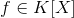
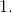
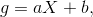
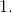
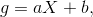
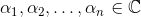
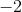
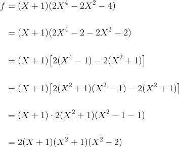
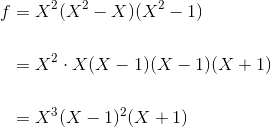

Polinoame ireductibile. Descompunerea polinoamelor în factori ireductibili
În secțiunea intiulată Polinoame ireductibile. Descompunerea polinoamelor în factori ireductibili vei putea afla ce este un polinom reductibil, respectiv ce este un polinom ireductibil și cum se descompune în factori ireductibili polinomul în funcție de corpul în care polinomul are coeficienți (adică dacă coeficienții sunt complecși, reali, raționali sau fac parte din mulțimea claselor de resturi modulo p).
POLINOAME IREDUCTIBILE ÎN
Fie un corp comutativ.
Definiția P39: Polinom reductibil
Polinomul nenul  se numește reductibil pente corpul  dacă există polinoamele de grad cel puțin
dacă există polinoamele de grad cel puțin  astfel încât
astfel încât
Definiția P40: Polinom ireductibil
Un polinom care nu este reductibil peste , se numește ireductibil peste .
Observații:
- Orice polinom de gradul
 din
din ![K[X]](../media/webbooks/338/2261/images/equations/5bdi-y_q68spnkihmlsfdq==.gif) este polinom ireductibil peste .
este polinom ireductibil peste . - Dacă un polinom , de grad cel puțin este ireductibil peste , atunci el nu are rădăcini în .
Întra-adevăr, dacă  ar avea elementul
ar avea elementul  rădăcină, atunci se divide cu și se poate scrie că deci nu ar fi ireductibil.
rădăcină, atunci se divide cu și se poate scrie că deci nu ar fi ireductibil.
- Dacă polinomul are gradul
 sau
sau  și nu admite rădăcini în atunci el este polinom ireductibil peste
și nu admite rădăcini în atunci el este polinom ireductibil peste
Într-adevăr, dacă ar fi ireductibil peste atunci el s-ar scrie sub forma  unde
unde  sau
sau  ar avea gradul  Dacă  atunci și se contrazice ipoteza că nu are rădăcini în
ar avea gradul  Dacă  atunci și se contrazice ipoteza că nu are rădăcini în
Exemple:
- Polinomul este ireductibil peste Dacă ar fi reductibil peste atunci el ar avea o rădăcină
 . Dar
. Dar  conduce la deci ceea ce nu se poate.
conduce la deci ceea ce nu se poate. - Polinomul este reductibil peste deoarece
După cum s-a observat în exemplele anterioare, descompunerea în factori ireductibili depinde de corpul în care polinomul are coeficienții.
Astfel, identificăm următoarele cazuri:
- Cazul
Fie ![f\in\mathbb{C}[X]](../media/webbooks/338/2261/images/equations/hsjx56mufi_uqc7l_jkruw==.gif) un polinom nenul de grad . Dacă
un polinom nenul de grad . Dacă  din Teorema P37: teorema fundamentală a algebrei rezultă că are cel puțin o rădăcină iar din Teorema P34: Bézout se obține că se divide cu polinomul Așadar, nu este ireductibil pentru
din Teorema P37: teorema fundamentală a algebrei rezultă că are cel puțin o rădăcină iar din Teorema P34: Bézout se obține că se divide cu polinomul Așadar, nu este ireductibil pentru 
În concluzie, un polinom nenul este ireductibil peste  dacă și numai dacă are gradul
dacă și numai dacă are gradul
- Cazul

Dacă ![f\in\mathbb{R}[X]](../media/webbooks/338/2261/images/equations/zutvmf04uhdbvqttxv4gqq==.gif) este un polinom nenul, el este ireductibil numai în cazurile când:
este un polinom nenul, el este ireductibil numai în cazurile când:
are gradul
are gradul și nu are rădăcini reale.
Rezultă că orice polinom de grad este polinom reductibil peste deci el se poate scrie ca produs de polinoame de grad cel puțin
- Cazul și prim
În inelele de polinoame ![\mathbb{Q}[X]](../media/webbooks/338/2261/images/equations/nfkzmpmyzpzc9tltzphzga==.gif) și
și ![\mathbb{Z}_p[X]](../media/webbooks/338/2261/images/equations/migmyyf7gmnvqktjgtddkq==.gif) există polinoame ireductibile de orice grad De exemplu este ireductibil peste
există polinoame ireductibile de orice grad De exemplu este ireductibil peste
DECOMPUNEAREA POLINOAMELOR ÎN FACORI IREDUCTIBILI
Teorema P41: Descompunerea în polinoame ireductibile
Fie un corp comutativ și un polinom de grad 
Au loc următoarele rezultate:
- Polinomul se descompune într-un produs finit de polinoame ireductibile peste .
- Dacă sunt două descompuneri în produs de polinoame ireductibile ale lui , atunci și există o permutare cu proprietatea că
Teorema P42: Descompunere cu ajutorul rădăcinilor
Fie un polinom de grad
- Dacă  sunt rădăcinile polinomului
 atunci:
atunci: - Dacă sunt rădăcinile distincte ale polinomului cu multiplicitățile atunci:
În concluzie, polinomul va avea următoarea descompunere în polinoame ireductibile:
unde și sunt rădăcinile reale ale lui , iar polinoamele nu au rădăcini reale.
Exemple:
- Descompuneți în factori ireductibili peste corpurile polinomul
Rezolvare:
Observăm  deci polinomul
deci polinomul  se divide cu
se divide cu 
Folosim schema lui Horner astfel:
| |  | ||||
 | |  | | |
Am obținut că:

Rezultă că polinomul dat are următoarele descompuneri:
- peste
- peste
- peste
- Să se descompună în factori ireductibili polinomul
Rezolvare:
Descompunerea în factori ireductibili a polinomului dat este
- Să se determine c.m.m.d.c. și c.m.m.m.c. pentru polinoamele și
Rezolvare:
Descompunem mai întâi în factori ireductibili cele două polinoame:

Atunci:
(alegem factorii ireductibili comuni celor două polinoame, la puterea cea mai mică);
(alegem factorii comuni și necomuni la puterea cea mai mare).
Observație:
Dacă polinoamele sunt descompuse în produse de factori ireductibile, atunci:
- c.m.m.d.c.
 este produsul factorilor ireductibili comuni, luați la puterea cea mai mică;
este produsul factorilor ireductibili comuni, luați la puterea cea mai mică; - c.m.m.m.c. este produsul factorilor ireductibili comuni sau necomuni, luați la puterea cea mai mare.